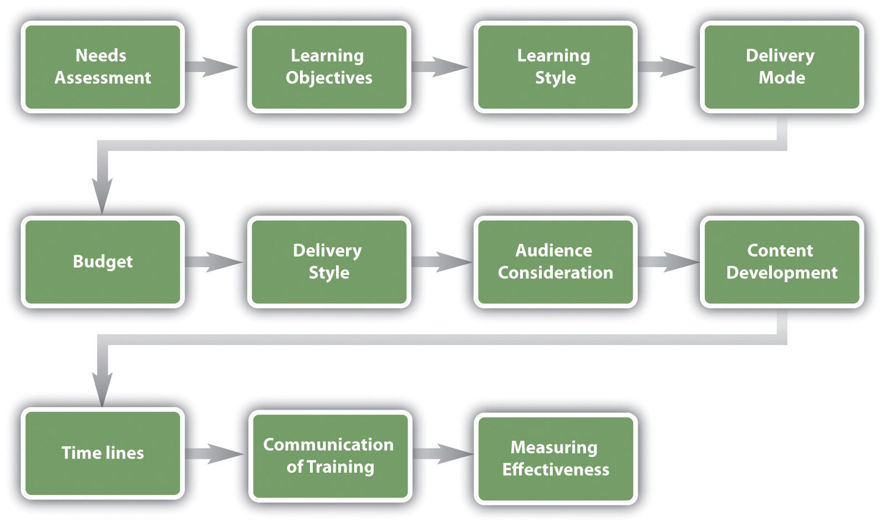
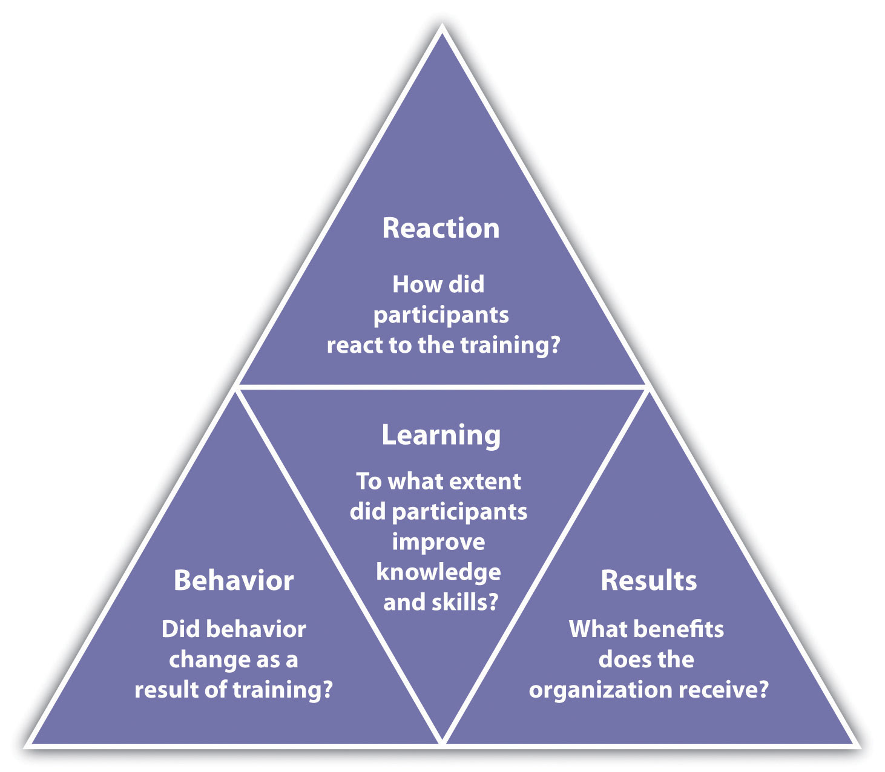
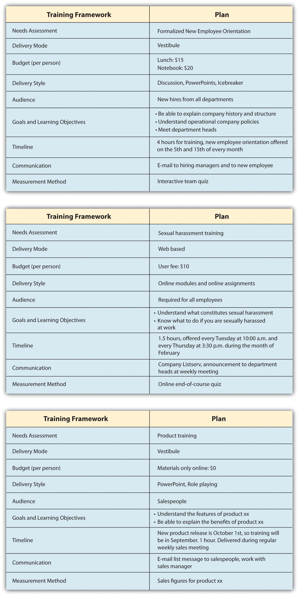
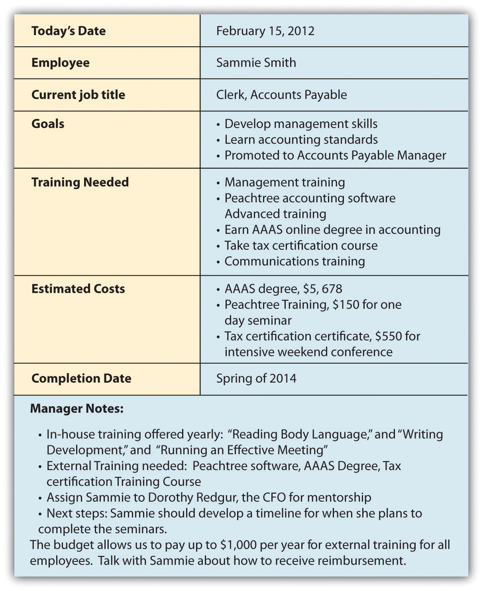
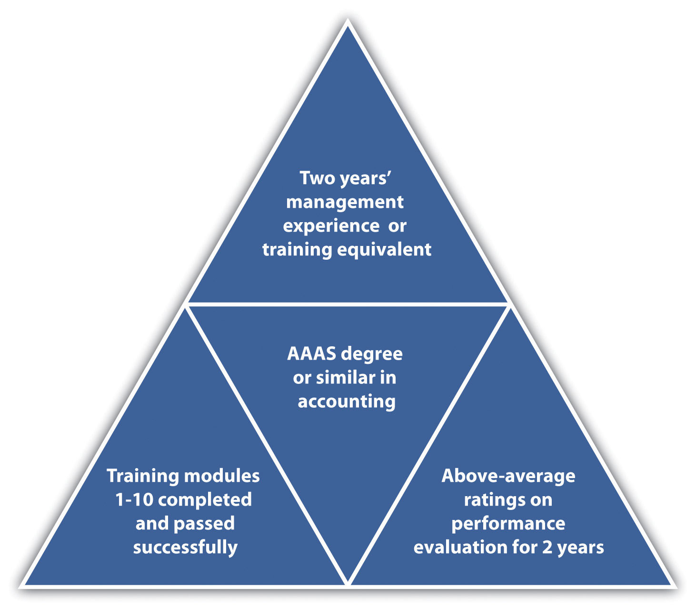
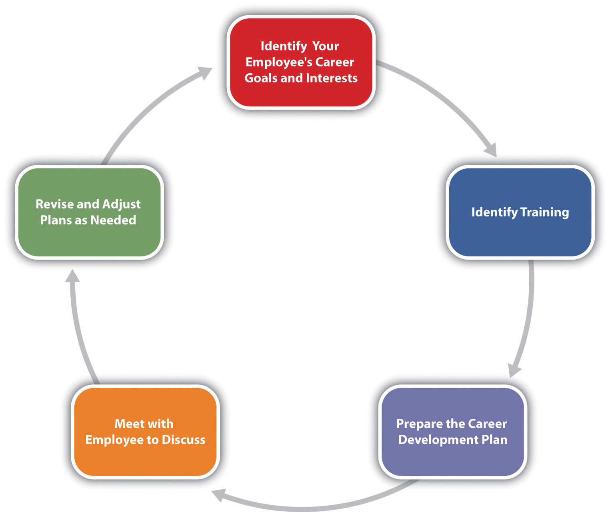

The next step in the training process is to create a training framework that will help guide you as you set up a training program. Information on how to use the framework is included in this section.
When developing your training plan, there are a number of considerations. Training is something that should be planned and developed in advance.
Figure 8.6 Training Program Development Model
The considerations for developing a training program are as follows:
Can you think of a time where you received training, but the facilitator did not connect with the audience? Does that ever happen in any of your classes (of course not this one, though)?
The first step in developing a training program is to determine what the organization needs in terms of training. There are three levels of training needs assessment: organizational assessmentA type of needs assessment that allows us to determine the skills, knowledge, and abilities a company needs to meet its strategic objectives., occupational (task) assessmentA type of needs assessment that looks at the specific tasks, skills knowledge, and abilities required to do jobs within the organization., and individual assessmentA type of needs assessment that looks at the performance of an individual employee and determines what training should be accomplished for that individual.:
We can apply each of these to our training plan. First, to perform an organizational assessment, we can look at future trends and our overall company’s strategic plan to determine training needs. We can also see how jobs and industries are changing, and knowing this, we can better determine the occupational and individual assessments.
Researching training needs can be done through a variety of ways. One option is to use an online tool such as SurveyMonkey to poll employees on what types of training they would like to see offered.
As you review performance evaluations turned in by your managers, you may see a pattern developing showing that employees are not meeting expectations. As a result, this may provide data as to where your training is lacking.
There are also types of training that will likely be required for a job, such as technical training, safety training, quality training, and professional training. Each of these should be viewed as separate training programs, requiring an individual framework for each type of training. For example, an employee orientation framework will look entirely different from an in-house technical training framework.
Training must be tied to job expectations. Any and all training developed should transfer directly to the skills of that particular employee. Reviewing the HR strategic plan and various job analyses may help you see what kind of training should be developed for specific job titles in your organization.
After you have determined what type of training should occur, learning objectives for the training should be set. A learning objectiveSomething you want your learners to know after the training. is what you want the learner to be able to do, explain, or demonstrate at the end of the training period. Good learning objectives are performance based and clear, and the end result of the learning objective can be observable or measured in some way. Examples of learning objectives might include the following:
Once we have set our learning objectives, we can utilize information on learning styles to then determine the best delivery mode for our training.
Understanding learning styles is an important component to any training program. For our purposes, we will utilize a widely accepted learning style model. Recent research has shown that classifying people into learning styles may not be the best way to determine a style, and most people have a different style depending on the information being taught. In a study by Pashler et al.,Harold Pashler, Mark McDaniel, Doug Rohrer, and Robert Bjork, “Learning Styles: Concepts and Evidence,” Psychological Science in the Public Interest 9, no. 3 (2008): 109–19, accessed February 26, 2011, http://www.psychologicalscience.org/journals/pspi/PSPI_9_3.pdf. the authors look at aptitude and personality as key traits when learning, as opposed to classifying people into categories of learning styles. Bearing this in mind, we will address a common approach to learning styles next.
An effective trainer tries to develop training to meet the three different learning styles:“What’s YOUR Learning Style?” adapted from Instructor Magazine, University of South Dakota, August 1989, accessed July 28, 2010, http://people.usd.edu/~bwjames/tut/learning-style/.
Most individuals use more than one type of learning style, depending on what kinds of information they are processing. For example, in class you might be a visual learner, but when learning how to change a tire, you might be a kinesthetic learner.
Depending on the type of training that needs to be delivered, you will likely choose a different mode to deliver the training. An orientation might lend itself best to vestibule training, while sexual harassment training may be better for web-based training. When choosing a delivery mode, it is important to consider the audience and budget constrictions. For example, Oakwood Worldwide, a provider of temporary housing, recently won the Top 125 Training Award for its training and development programs.“Oakwood Worldwide Honored by Training Magazine for Fifth Consecutive Year Training also Presents Oakwood with Best Practice Award,” press release, February 25, 2011, Marketwire, accessed February 26, 2011, http://www.live-pr.com/en/oakwood-worldwide-honored-by-training-magazine-r1048761409.htm. It offers in-class and online classes for all associates and constantly add to its course catalog. This is a major recruitment as well as retention tool for its employees. In fact, the company credits this program for retaining 25 percent of its workforce for ten years or more. Table 8.1 "Types of Training and Delivery" looks at each of the types of training and suggests appropriate options for delivery modes.
Table 8.1 Types of Training and Delivery
| Delivery Method | Type of Training Suggested |
|---|---|
| On-the-job coaching | Technical training |
| Skills training | |
| Managerial training | |
| Safety training | |
| Mentor | Technical training |
| Skills training | |
| Managerial training | |
| Safety training | |
| Brown bag lunch | Quality training |
| Soft skills training | |
| Professional training | |
| Safety training | |
| Web-based | Technical training |
| Quality training | |
| Skills training | |
| Soft skills training | |
| Professional training | |
| Team training | |
| Managerial training | |
| Safety training | |
| Job shadowing | Technical training |
| Quality training | |
| Skills training | |
| Safety training | |
| Job swapping | Technical training |
| Quality training | |
| Skills training | |
| Professional training | |
| Team training | |
| Managerial training | |
| Safety training | |
| Vestibule training | Technical training |
| Quality training | |
| Skills training | |
| Soft skills training | |
| Professional training | |
| Team training | |
| Managerial training | |
| Safety training |
How much money do you think the training will cost? The type of training performed will depend greatly on the budget. If you decide that web-based training is the right delivery mode, but you don’t have the budget to pay the user fee for the platform, this wouldn’t be the best option. Besides the actual cost of training, another cost consideration is people’s time. If employees are in training for two hours, what is the cost to the organization while they are not able to perform their job? A spreadsheet should be developed that lists the actual cost for materials, snacks, and other direct costs, but also the indirect costs, such as people’s time.
Taking into consideration the delivery method, what is the best style to deliver this training? It’s also important to keep in mind that most people don’t learn through “death by PowerPoint”; they learn in a variety of ways, such as auditory, kinesthetic, or visual. Considering this, what kinds of ice breakers, breakout discussions, and activities can you incorporate to make the training as interactive as possible? Role plays and other games can make the training fun for employees. Many trainers implement online videos, podcasts, and other interactive media in their training sessions. This ensures different learning styles are met and also makes the training more interesting.
Considering your audience is an important aspect to training. How long have they been with the organization, or are they new employees? What departments do they work in? Knowing the answers to these questions can help you develop a relevant delivery style that makes for better training. For example, if you know that all the people attending the training are from the accounting department, examples you provide in the training can be focused on this type of job. If you have a mixed group, examples and discussions can touch on a variety of disciplines.
The content you want to deliver is perhaps one of the most important parts in training and one of the most time-consuming to develop. Development of learning objectives or those things you want your learners to know after the training makes for a more focused training. Think of learning objectives as goals—what should someone know after completing this training? Here are some sample learning objectives:
After you have developed the objectives and goals, you can begin to develop the content of the training. Consideration of the learning methods you will use, such as discussion and role playing, will be outlined in your content area.
Development of content usually requires a development of learning objectives and then a brief outline of the major topics you wish to cover. With that outline, you can “fill in” the major topics with information. Based on this information, you can develop modules or PowerPoint slides, activities, discussion questions, and other learning techniques.
For some types of training, time lines may be required to ensure the training has been done. This is often the case for safety training; usually the training should be done before the employee starts. In other words, in what time frame should an employee complete the training?
Another consideration regarding time lines is how much time you think you need to give the training. Perhaps one hour will be enough, but sometimes, training may take a day or even a week. After you have developed your training content, you will likely have a good idea as to how long it will take to deliver it. Consider the fact that most people do not have a lot of time for training and keep the training time realistic and concise.
From a long-term approach, it may not be cost effective to offer an orientation each time someone new is hired. One consideration might be to offer orientation training once per month so that all employees hired within that month are trained at the same time.
Development of a dependable schedule for training might be ideal, as in the following example:
Developing a dependable training schedule allows for better communication to your staff, results in fewer communication issues surrounding training, and allows all employees to plan ahead to attend training.
Once you have developed your training, your next consideration is how you will communicate the available training to employees. In a situation such as an orientation, you will need to communicate to managers, staff, and anyone involved in the training the timing and confirm that it fits within their schedule. If it is an informal training, such as a brown bag lunch on 401(k) plans, this might involve determining the days and times that most people are in the office and might be able to participate. Because employees use Mondays and Fridays, respectively, to catch up and finish up work for the week, these days tend to be the worst for training.
Consider utilizing your company’s intranet, e-mail, and even old-fashioned posters to communicate the training. Many companies have Listservs that can relay the message to only certain groups, if need be.
What can happen if training is not communicated to employees appropriately?
After we have completed the training, we want to make sure our training objectives were met. One model to measure effectiveness of training is the Kirkpatrick model,Donald Kirkpatrick, Evaluating Training Programs, 3rd ed. (San Francisco: Berrett-Koehler, 2006). developed in the 1950s. His model has four levels:
Each of Kirkpatrick’s levels can be assessed using a variety of methods. We will discuss those next.
Figure 8.7 Kirkpatrick’s Four Levels of Training Evaluation
Review the performance of the employees who received the training, and if possible review the performance of those who did not receive the training. For example, in your orientation training, if one of the learning objectives was to be able to request time off using the company intranet, and several employees who attended the training come back and ask for clarification on how to perform this task, it may mean the training didn’t work as well as you might have thought. In this case, it is important to go back and review the learning objectives and content of your training to ensure it can be more effective in the future.
Many trainers also ask people to take informal, anonymous surveys after the training to gauge the training. These types of surveys can be developed quickly and easily through websites such as SurveyMonkey. Another option is to require a quiz at the end of the training to see how well the employees understand what you were trying to teach them. The quiz should be developed based on the learning objective you set for the training. For example, if a learning objective was to be able to follow OSHA standards, then a quiz might be developed specifically related to those standards. There are a number of online tools, some free, to develop quizzes and send them to people attending your training. For example, Wondershare QuizCreatorWonderShare QuizCreator, accessed July 29, 2010, http://www.sameshow.com/quiz-creator.html#172. offers a free trial and enables the manager to track who took the quiz and how well they did. Once developed by the trainer, the quiz can be e-mailed to each participant and the manager can see how each trainee did on the final quiz. After you see how participants do on the quiz, you can modify the training for next time to highlight areas where participants needed improvement.
It can be easy to forget about this step in the training process because usually we are so involved with the next task: we forget to ask questions about how something went and then take steps to improve it.
One way to improve effectiveness of a training program is to offer rewards when employees meet training goals. For example, if budget allows, a person might receive a pay increase or other reward for each level of training completed.
Figure 8.8
Once the training framework has been developed, the training content can be developed. The training plan serves as a starting point for training development.
Another important aspect to training is career development programs. A career development programA process developed to help people manage their career, learn new things, and take steps to improve personally and professionally. is a process developed to help people manage their career, learn new things, and take steps to improve personally and professionally. Think of it as a training program of sorts, but for individuals. Sometimes career development programs are called professional development plans.
Figure 8.9 Sample Career Development Plan Developed by an Employee and Commented on by Her Manager
As you can see, the employee developed goals and made suggestions on the types of training that could help her meet her goals. Based on this data, the manager suggested in-house training and external training for her to reach her goals within the organization.
Career development programs are necessary in today’s organizations for a variety of reasons. First, with a maturing baby-boom population, newer employees must be trained to take those jobs once baby boomers retire. Second, if an employee knows a particular path to career development is in place, this can increase motivation. A career development plan usually includes a list of short- and long-term goals that employees have pertaining to their current and future jobs and a planned sequence of formal and informal training and experiences needed to help them reach the goals. As this chapter has discussed, the organization can and should be instrumental in defining what types of training, both in-house and external, can be used to help develop employees.
To help develop this type of program, managers can consider a few components:Martha Heller, “Six Tips for Effective Employee Development Programs,” CIO Magazine, June 15, 2005, accessed July 28, 2010, http://www.cio.com/article/29169/Six_Tips_for_Effective_Career_Development_Programs.
Figure 8.10 Career Development Sample Process to Become an Accounts Payable Manager
There are many tools on the web, including templates to help employees develop their own career development plans. Many organizations, in fact, ask employees to develop their own plans and use those as a starting point for understanding long-term career goals. Then hopefully the organization can provide them with the opportunities to meet these career goals. In the late 1980s, many employees felt that career opportunities at their current organizations dwindled after seeing the downsizing that occurred. It gave employees the feeling that companies were not going to help develop them, unless they took the initiative to do so themselves. Unfortunately, this attitude means that workers will not wait for career opportunities within the company, unless a clear plan and guide is put into place by the company.Peter Capelli, “A Balanced Plan for Career Development,” n.d., Microsoft, accessed July 29, 2010, http://office.microsoft.com/en-us/word-help/a-balanced-plan-for-career-development-HA001126815.aspx. Here is an example of a process that can be used to put a career development program in place:Jose Trueba Adolfo, “The Career Development Plan: A Quick Guide for Managers and Supervisors,” n.d., National Career Development Association, accessed July 29, 2010, http://associationdatabase.com/aws/NCDA/pt/sd/news_article/6420/_PARENT/layout_details/false.
Identifying and developing a planning process not only helps the employee but also can assist the managers in supporting employees in gaining new skills, adding value, and motivating employees.
Figure 8.11 Career Development Planning Process
